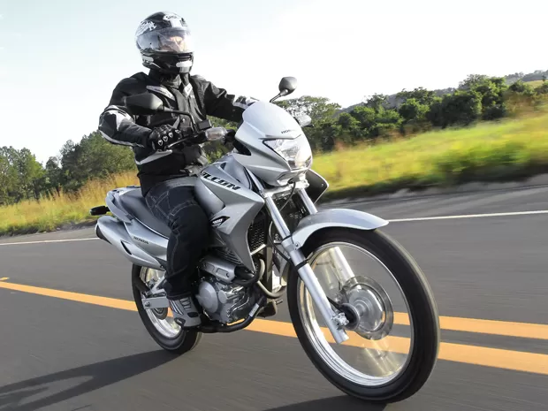
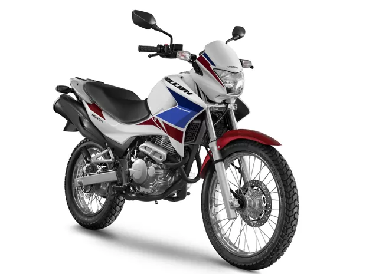
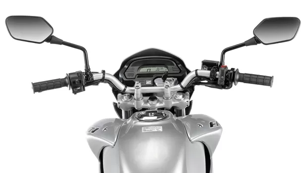

NX 400i Falcon
Agora com injeção eletrônica, nova Falcon traz poucas modificações e continua sendo uma boa companheira
A Honda NX4 Falcon, sucesso da categoria on/off road da marca, parou de ser produzida no fim de 2008, de lá prá cá nenhuma motocicleta conseguiu cobrir o “buraco” que ficou entre as motos de pequeno porte (250/300 cc) e as motos de médio porte (600 cc) com apelo de uso misto.
Porém, desde agosto de 2012, baseado em sua antecessora, a Honda aprimorou a receita passando a produzir a NX 400i Falcon. O modelo recebeu atualizações que a deixaram em acordo com as normas ambientais (emissão de poluente), como o sistema de injeção eletrônica PGM-FI. Além disto, apesar de relembrar muito a sua antecessora, o modelo ganhou um novo design, que a deixou ainda mais atraente.
Dia-a-dia
Andando com a Falcon no dia-a-dia dos grandes centros urbanos o deslocamento fica muito prazeroso, principalmente devido ao seu eficiente conjunto de suspensão, que deixa os defeitos do asfalto quase imperceptíveis. Na dianteira, o curso da suspensão é de 215mm, enquanto na traseira é de 180mm monoamortecida, ambas bastante longas. Realmente é dentro da cidaade que a nova Falcon mostra seu potencial, tanto pelo seu excelente motor, quanto por sua praticidade nas manobras em meio aos outros veículos.
Como a receita da antiga Falcon 400 foi aprimorada, o novo modelo recebeu algumas modificações em seu motor que a deixaram em acordo com as normas ambientais (emissão de poluente), como o sistema de injeção eletrônica PGM-FI. Além disso, a Honda NX 400i Falcon também possui um novo conjunto de escapamento, porém a moto ficou um pouco mais "amarrada" em relação a sua antecessora. No entanto, quando pegamos a estrada, isso não faz diferença.
Sua posição de pilotagem é bastante confortável, tanto para o piloto como também para o garupa. A altura do assento está na medida ideal, a 850mm do solo, e pode ser facilmente guiada por pessoas de baixa estatura. Além disso o seu imponente porte impõe respeito em meio ao trânsito das grandes cidades, chamando bastante atenção de quem passa.
Mudanças
A maioria dos atributos da NX Falcon 400i se remetem a sua antecessora. Quase todos os itens do novo modelo foram mantidos, e os que tiveram alterações causaram críticas pelos consumidores, a exemplo da potência do motor que perdeu cerca de 2 cavalos e 0,24 kgf.m de torque. Outro fator que mudou foi o conjunto de suspensões, agora com um curso um pouco menor, passou de 220mm para 215 mm na dianteira e de 195mm para 180mm na traseira.
A falta de alguns itens como lampejador de farol alto, regulagem de freio no manete e principalmente a opção de freios ABS, que esta presente até nos modelos das 300 cilindradas da Honda também são alvos de crítica, além dos seu preço público sugerido de R$ 18.900.
Apesar de se parecer muito visualmente com a antiga Falcon, a NX 400i recebeu alguns itens que a deixaram mais moderna. Destaque para o seu painel digital e as modificações em seu conjunto de carenagens - aletas laterais, capa do farol e traseira - Além do suporte para top case e novos grafismos.
Desfecho
A maioria das fabricantes de motocicletas não possuem uma versão intermediária de cilindrada dentro da categoria on/off road. Segundo a Fenabrave (federação das concessionárias) só nos últimos dois meses (Outubro a Novembro) foram emplacadas 582 motocicletas Honda NX 400i Falcon, um número bastante longe para a meta estabelecida pela marca de vender 11.000 motocicletas do modelo por ano.
Apesar da falta de concorrência na categoria, o modelo ainda não recuperou o sucesso da antiga Falcon, entretanto, a Honda NX 400i Falcon é uma moto extremamente versátil, muito agradável para o dia-a-dia e com potencial de sobra para pequenas viagens. Seu ponto negativo fica mesmo com o preço público sugerido de R$ 18.900, que é ainda, muitas vezes, bem diferente do preço praticado, podendo chegar a R$ 21.000 com o frete incluso
Ficha Técnica
Motor 397,2cc, OHC, RFVC, monocilíndrico, 4 tempos, arrefecido a ar
Potência máxima 28,7 cv a 6.500 rpm
Torque máximo 3,27 kgf.m a 6.000 rpm
Diâmetro x curso 85,0 x 70,0 mm
Alimentação Injeção eletrônica de combustível PGM-FI
Relação de compressão 8,8 : 1
Sistema de lubrificação Forçada, por bomba trocoidal
Sistema de ignição Eletrônica
Bateria 12V – 6 Ah
Farol (alto/baixo) 60/55 W
Sistema de partida Elétrica
Capacidade do tanque 15,3 (5,3 litros de reserva)
Óleo do motor 2,2 litros (1,7 para troca)
Transmissão 5 velocidades
Embreagem Multidisco em banho de óleo
Suspensão dianteira Garfo telescópio com 215 mm de curso
Suspensão traseira Mono-amortecido Pro-Link com 180 mm de curso
Freio dianteiro Disco simples de 256 mm de diâmetro e cáliper de duplo pistão
Freio traseiro Disco simples de 220 mm de diâmetro e cáliper de pistão simples
Pneu dianteiro 90/90 - 21M/C (54S)
Pneu traseiro 120/90 - 17M/C (64S)
Chassi Berço semiduplo
Altura do assento 850 mm
Altura mínima do solo 242 mm
Dimensões (C x L x A) 2.157 x 789 x 1.222 mm
Entre-eixos 1.434 mm
Peso seco 157 kg